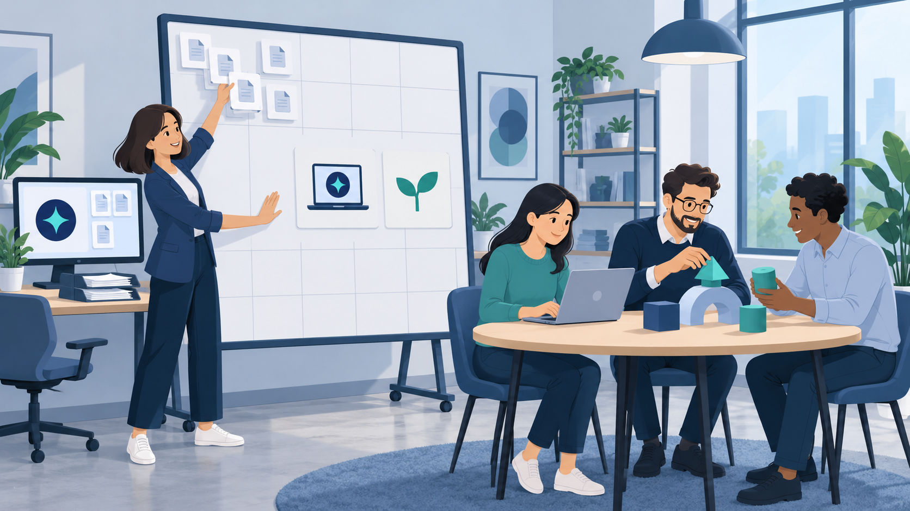

팀원에게 AI를 써 보라고 권했더니 “배울 시간이 없습니다”라는 답이 돌아옵니다. 팀장도 사정은 비슷하죠. 위에서는 AI 성과를 묻지만 팀의 업무량은 그대로니까요. 의지가 부족해서 생긴 문제일까요?
스탠퍼드대 HAI 연구진은 한 로펌을 2년 가까이 관찰했습니다. 전문 분야와 규모, 보상·승진 체계가 거의 같은 두 부서에 계약서와 비밀유지계약서 초안 작성을 돕는 동일한 AI 도구를 제공했죠.
첫 번째 부서장은 문서를 빨리 만들어 납기를 줄이자고 주문했습니다. 직원들은 기계의 부품이 된 기분이라고 했고, 도구를 하던 일에만 썼습니다. 두 번째 부서장은 지루한 일과 시간이 없어 못 했던 일을 물었습니다. 교육과 지식 공유 자리를 마련하고, 매주 도구를 익힐 시간도 비워 줬죠. 직원들은 법률 조사와 사건 분석으로 쓰임을 넓혔습니다. 다른 부서보다 도구를 58% 더 썼고, 새로운 시도는 70% 더 많았습니다.
한쪽은 일을 더 빨리 하라는 주문을 받았고, 다른 쪽은 하던 일을 덜어 낼 방법을 익힐 시간을 받았습니다. AI를 쓰라는 말에 시간이 따라오지 않으면 실행으로 이어지기 어렵습니다.
배울 시간이 저절로 생기기도 어렵습니다. 마이크로소프트 워크랩 보고서에서 직장인의 80%는 업무에 쓸 시간이나 에너지가 부족하다고 답했습니다. 사용 데이터 분석에서는 핵심 업무 시간에 이메일·채팅·회의·알림이 2분마다 업무를 끊는 것으로 나타났습니다.
2026년 이천포럼 타운홀에서 CEO는 구성원 지원을 Up-Skilling과 Re-Skilling 두 방향으로 제시했습니다. 반복 업무는 AI에 맡기고 확보된 시간을 신규사업처럼 사람이 해야 하는 영역에 쓰도록 지원해, 업무 포트폴리오를 Operation 중심에서 성장형으로 바꾸겠다는 것이죠. 역량진단 결과를 토대로 개인별 교육을 진행할 계획도 함께 밝혔습니다.
도구, 그다음 시간, 그다음 새 일이라는 순서입니다. 이를 팀 주간 일정표에 반영하는 것은 팀장의 몫이죠. 도구를 제공하는 것으로 지원이 끝나지는 않습니다.

다음 1 on 1(정기 일대일 면담)에서 물어보세요. “가장 지루하게 반복되는 일은 무엇인가요?”, “시간이 없어 못 했지만 해 보고 싶은 일은요?” 답을 들었다면 주당 한 시간이라도 도구를 익힐 시간으로 일정에 적어 주세요. 여러분의 팀은 도구와 함께 새로운 일을 시도할 시간도 건네고 있나요?